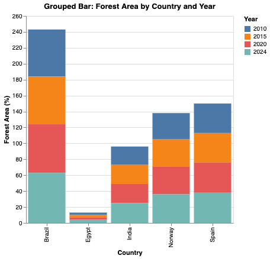
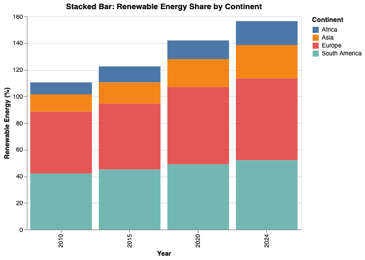
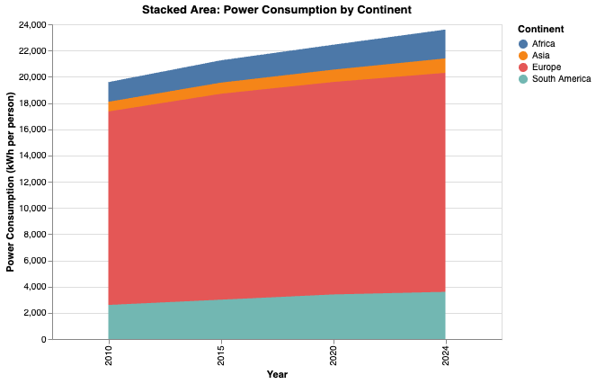

Grouped Bar Chart: Renewable Energy Usage
This grouped bar chart compares renewable energy use across multiple countries for different years. Each group represents a country, while colors represent different years. This view helps compare countries side-by-side for each year.
Stacked Bar Chart: CO₂ Emissions by Year
The stacked bar chart shows CO₂ emissions per person broken down by year. Each color segment represents a different country. This visualization makes it easy to compare total emissions while also seeing how individual countries contribute.
Area Chart (Included as supporting chart for bars)
An area chart is included to show cumulative consumption patterns across continents. This complements the bar charts by showing longer-term trends and overall usage levels.